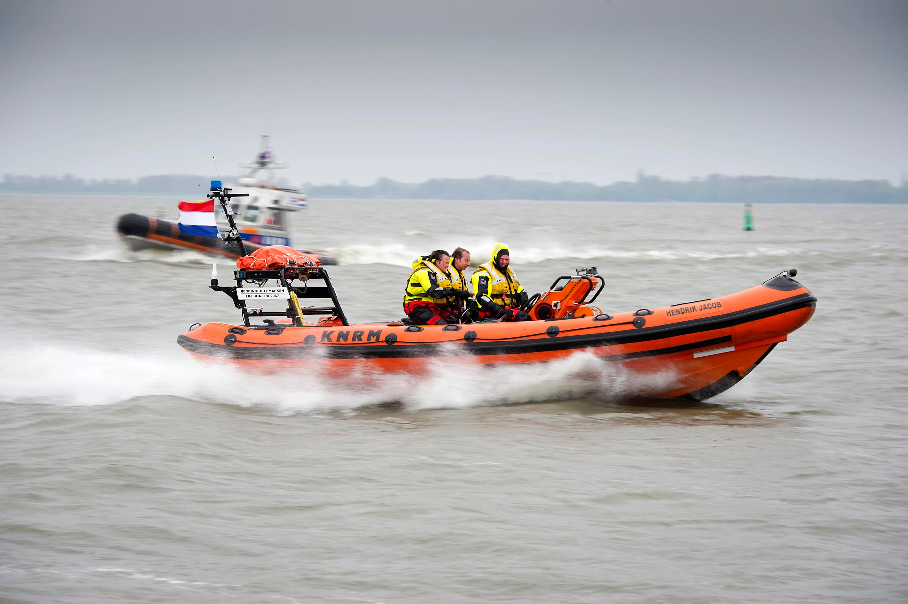

Massale zoektocht naar zeiljacht op Markermeer en IJmeer’
De melding van een vermoedelijk vermist zeiljacht zorgde ervoor dat hulpdiensten vannacht een grootste zoekactie op poten zetten.
Reddingstation Wijdenes meldt dat met de opvarenden van het zeiljacht vanaf het eind van de middag geen contact meer was. Hierdoor werd aangenomen dat de opvarenden mogelijk in problemen waren gekomen, waarop de kustwacht besloot groot op te schalen.
De KNRM Lelystad, Marken en Huizen en reddingsbrigades vanuit Wijdenes, Hoorn, Warder, Naarden en Gooi- en Eemmeer kwamen samen met de politie in actie om naar de zeiljacht te zoeken.
In totaal deden elf reddingboten en een SAR-helikopter mee aan wat een urenlange zoekactie op het IJmeer en Markermeer werd. Uiteindelijk kreeg de kustwacht om 2.40 uur contact met de opvarenden: zij waren inmiddels veilig in een haven aangekomen.